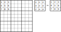

ラテン方陣(新)
⇒Latin Square(素朴版)
ラテン方陣は、nxnの枡に1～nの数字を縦1列・横1行にダブりなく配置したものです。
数独の解は、9x9のラテン方陣にさらに全体を3x3のブロックに区切り、ブロックについてもダブりなく1～9の数字を配置する、と制約したものです。
9x9のラテン方陣は5.525x1027ありますが、ブロック制約付の9x9のラテン方陣(数独の解)は6.671x1021と約1/1,000,000になります。
(正確には、5524751496156892842531225600、6670903752021072936960)
【参考】Frazer Jarvis, June 20, 2005,Enumerating possible Sudoku grids,
http://www.afjarvis.staff.shef.ac.uk/sudoku/sudoku.pdf
ここでは、数独のラテン方陣の導き方を示します。
ステップ1
数独のラテン方陣のブロック1(左上ブロック)の数字を固定します。
これは、ブロック1の数字を{ak|k=1～9}としたとき、方陣全体に{ak→k}の変換を施すと左の方陣に変換できることによります。

ステップ2
上段 3ブロックに次のように名前を付けます。それぞれの要素は 3数字の集合です。

A、B、Cを定めると、D、E、Fは一意に定まります。
A は{4,5,6,7,8,9}のうちの3数字がなります。これは 6C3=20 通りあります。
Block2
00 ...456...
01 ...45.7..
02 ...45..8.
03 ...45...9
04 ...4.67..
05 ...4.6.8.
06 ...4.6..9
07 ...4..78.
08 ...4..7.9
09 ...4...89
10 ....567..
11 ....56.8.
12 ....56..9
13 ....5.78.
14 ....5.7.9
15 ....5..89
16 .....678.
17 .....67.9
18 .....6.89
19 ......789
A を決めるとB は {4,5,6} ∪ A 以外になります。
C は {7,8,9} ∪ A ∪ B と共通要素を持ちません。B によっては、Cがないこともあります。
したがって、B、Cは同時に決まります。B = {4,5,6} と {7,8,9} では C は1通り、その他の場合はそれぞれ3通りあり、 BとCの組み合わせは全部で56通りあります。
A,B,C は３要素の集合
A ⊂ {4,5,6,7,8,9}
B ⊂ {1,2,3,7,8,9} - A
C ⊂ {1,2,3,4,5,6} - (A ∪ B)
Block2(B) Block3(C) Block4 Block7
00 ...456... ......789 .2..5..8. ..3..6..9
01 ...45.7.. 1......89 .23.5.... 1....6..9
02 ...45.7.. .2.....89 .23.5.... ...4.6..9
03 ...45.7.. ..3....89 .23.5.... .....67.9
04 ...45..8. 1.....7.9 .2..56... 1.3.....9
05 ...45..8. .2....7.9 .2..56... ..34....9
06 ...45..8. ..3...7.9 .2..56... ..3...7.9
07 ...45...9 1.....78. .2..5...9 1.3..6...
08 ...45...9 .2....78. .2..5...9 ..34.6...
09 ...45...9 ..3...78. .2..5...9 ..3..67..
10 ...4.67.. 1......89 .23....8. 1....6..9
11 ...4.67.. .2.....89 .23....8. ...4.6..9
12 ...4.67.. ..3....89 .23....8. .....67.9
13 ...4.6.8. 1.....7.9 .2...6.8. 1.3.....9
14 ...4.6.8. .2....7.9 .2...6.8. ..34....9
15 ...4.6.8. ..3...7.9 .2...6.8. ..3...7.9
16 ...4.6..9 1.....78. .2.....89 1.3..6...
17 ...4.6..9 .2....78. .2.....89 ..34.6...
18 ...4.6..9 ..3...78. .2.....89 ..3..67..
19 ...4..78. 12......9 .23..6... 1..4....9
20 ...4..78. 1.3.....9 .23..6... 1.....7.9
21 ...4..78. .23.....9 .23..6... ...4..7.9
22 ...4..7.9 12.....8. .23.....9 1..4.6...
23 ...4..7.9 1.3....8. .23.....9 1....67..
24 ...4..7.9 .23....8. .23.....9 ...4.67..
25 ...4...89 12....7.. .2...6..9 1.34.....
26 ...4...89 1.3...7.. .2...6..9 1.3...7..
27 ...4...89 .23...7.. .2...6..9 ..34..7..
28 ....567.. 1......89 ..3.5..8. 1....6..9
29 ....567.. .2.....89 ..3.5..8. ...4.6..9
30 ....567.. ..3....89 ..3.5..8. .....67.9
31 ....56.8. 1.....7.9 ....56.8. 1.3.....9
32 ....56.8. .2....7.9 ....56.8. ..34....9
33 ....56.8. ..3...7.9 ....56.8. ..3...7.9
34 ....56..9 1.....78. ....5..89 1.3..6...
35 ....56..9 .2....78. ....5..89 ..34.6...
36 ....56..9 ..3...78. ....5..89 ..3..67..
37 ....5.78. 12......9 ..3.56... 1..4....9
38 ....5.78. 1.3.....9 ..3.56... 1.....7.9
39 ....5.78. .23.....9 ..3.56... ...4..7.9
40 ....5.7.9 12.....8. ..3.5...9 1..4.6...
41 ....5.7.9 1.3....8. ..3.5...9 1....67..
42 ....5.7.9 .23....8. ..3.5...9 ...4.67..
43 ....5..89 12....7.. ....56..9 1.34.....
44 ....5..89 1.3...7.. ....56..9 1.3...7..
45 ....5..89 .23...7.. ....56..9 ..34..7..
46 .....678. 12......9 ..3..6.8. 1..4....9
47 .....678. 1.3.....9 ..3..6.8. 1.....7.9
48 .....678. .23.....9 ..3..6.8. ...4..7.9
49 .....67.9 12.....8. ..3....89 1..4.6...
50 .....67.9 1.3....8. ..3....89 1....67..
51 .....67.9 .23....8. ..3....89 ...4.67..
52 .....6.89 12....7.. .....6.89 1.34.....
53 .....6.89 1.3...7.. .....6.89 1.3...7..
54 .....6.89 .23...7.. .....6.89 ..34..7..
55 ......789 123...... ..3..6..9 1..4..7..
ステップ3
A,B,C,D,E,Fはそれぞれが 3数字の集合であり、独立して 3P3=6 通り設定できます。
ステップ4
左側の3ブロックは上段3ブロックと同様に設定できます。あるいは変換で求まります(GNPX_v6 参照)。 また、上段3ブロックと左側の3ブロックは独立に決め方られます。
ステップ5
上段3ブロックと左側の3ブロックを決めたら、残りの4ブロックは力業で求めます(例えば、TryAndError)。
LatinSquea アプリケーション
ここまで、たどり着いたかた（あるいはワープした方）は、ラテン方陣生成アプリケーションLatinSquareExer）を動かしてみるとよいでしょう。
ブロックB2、B3、B4、B7を選択すると、B5689ボタンの下に、このパターンのブロック制約付ラテン方陣の数を表示します。
B5689ボタンをクリックすると個々のラテン方陣を順に表示します。ブロックB2、B3、B4、B7の設定により数は違いますが、
～6280のラテン方陣があることが示されます。ブロック1を固定しているので1/9!ですが、
これを集計したのが、数独の解となりうるブロック制約付ラテン方陣の数6.671x1021になります。
数独の解となる数字配列がどれだけ多くあるか、体感してみてください。
ブロック制約付ラテン方陣の数を数え上げるには、ここで紹介したこと以外のことも用いて（問題を小さくして）、
実際に数えあげます。興味のある方は、先の文献をみるとよいでしょう。
また、数独解析プログラムを持っている方は、このルーテインとつなげれば問題作成プログラムが作れます。

⇒ GNPX の 問題生成方法